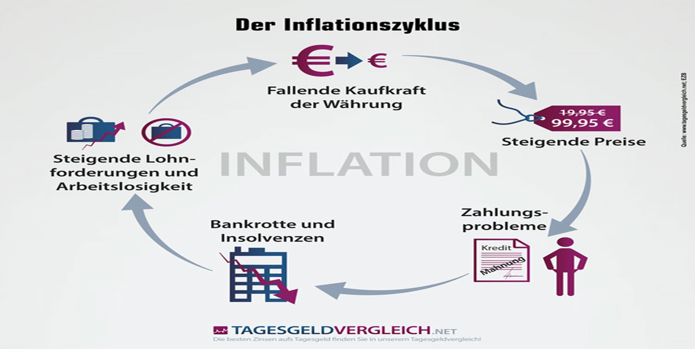

Tatsächliche und gefühlte Inflation

Dieses Phänomen wird als gefühlte Inflation bezeichnet und ist auf verschiedene Faktoren zurückzuführen.
Hier ist der Unterschied zwischen gemessener und gefühlter Inflation:
Deutschland berechnet das Statistische Bundesamt die Inflationsrate jeweils auf der Grundlage eines „repräsentativen Warenkorbs“.
Dieser Korb enthält eine Auswahl an vielfältigeren Waren und Dienstleistungen, von Roggenbrot über Autos bis hin zur Anmietung einer Wohnung oder zum Arztbesuch.
Die Entwicklung der Korbpreise ergibt die Inflationsrate.
Die wahrgenommene Inflation hingegen ist die Preissteigerungsrate, die der einzelne Konsument subjektiv wahrnimmt.
Die gefühlte Inflation kann deutlich von der tatsächlich gemessenen Inflation abweichen.
Gründe für eine gefühlte Inflation
Es gibt zwei wichtige Gründe für die Entstehung der gefühlten Inflation. Der erste Grund ist die persönliche Wahrnehmung.
Ein Verbraucher nimmt sehr deutlich eine Preissteigerung bei Produkten des täglichen Bedarfs wahr, weil diese häufig gekauft werden.
So ist beispielsweise ein Anstieg der Preise von Lebensmitteln wie Brot oder Milch deutlich spürbar und für den Verbraucher oft präsent.
Dies steht im Gegensatz zur Entwicklung der Preise für langlebige Güter.
Ein Computer oder Fernseher wird selten gekauft und spielt daher eine untergeordnete Rolle in der Verbraucherwahrnehmung.
Während die Preise für Lebensmittel die Preise für nachhaltige Produkte schneller steigen lassen, empfinden die Verbraucher die Inflationsrate oft als höher als sie ist.
Der zweite Grund für die Differenz zwischen der gemessenen Inflationswahrnehmung ist das individuelle Verhalten der Verbraucher.
Bei dem Warenkorb, mit dessen Hilfe die Inflation kalkuliert wird, werden die unterschiedlichen Güter anders gewichtet. Die Gewichtung soll das Konsumverhalten eines bundesdeutschen Durchschnittshaushaltes widerspiegeln.
Im Anno 2012 werden bspw. die Ausgaben für Nahrungsmittel und alkoholfreie Getränke mit kugelförmig 10,4% eines Haushaltsbudgets veranschlagt. Gibt dieser Tage nichtsdestominder ein Haushalt 15% des Budgets für Nahrungsmittel aus, stellt dies eine Abweichung des Durchschnitts dar.
Da solcher Haushalt überdurchschnittlich reichlich Devisen für Lebensmittel ausgibt, wäre er von stark steigenden Lebensmittelpreisen überdurchschnittlich stark betroffen. Dies führt daraufhin zu einer höher gefühlten Inflation.
Die Einführung des Euros als Beispiel der gefühlten Inflation
Ein Beispiel für wahrgenommene hohe Inflation ist die Einführung von als Zahlungsmittel im Jahr 2002.
Obwohl die Inflation 2002 und 2003 niedriger war als in den beiden vorangegangenen Jahren, hatten viele Verbraucher das Gefühl, dass die Preise auf ungewöhnliche Weise gestiegen waren.
Einer der möglichen Gründe ist, dass die Lebensmittelpreise ungewöhnlich stark gestiegen sind.
Bei der Berechnung der Inflation wurde dieser Anstieg jedoch relativiert durch andere Produkte, für die ein niedrigerer Preis oder keine Preiserhöhung festgestellt werden konnte.
Auf der anderen Seite wurden angesichts der bevorstehenden Einführung des Euro Befürchtungen von den Medien geäußert, dass die Währung zur Preiserhöhung ausgenutzt werden könnte.
Die Verbraucher haben ihr besonderes Augenmerk geschenkt und einen deutlichen Preisanstieg festgestellt.